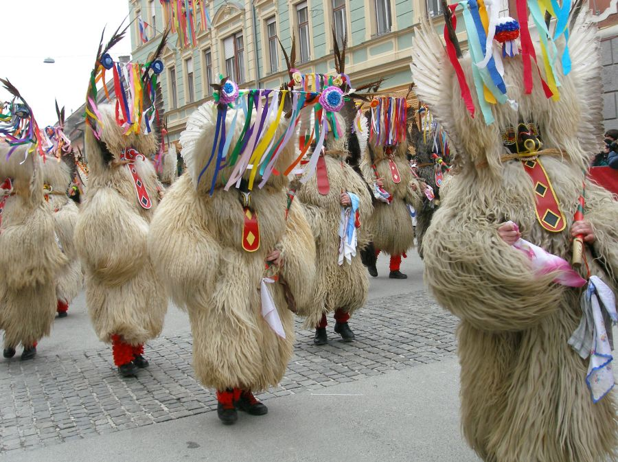

This is a webpage all about Slovenia. You'll learn about Slovenia.
Slovenia, country in central Europe that was part of Yugoslavia for most of the 20th century. Slovenia is a small but topographically diverse country made up of portions of four major European geographic landscapes—the European Alps, the karstic Dinaric Alps, the Pannonian and Danubian lowlands and hills, and the Mediterranean coast. Easily accessible mountain passes (now superseded by tunnels) through Slovenia’s present-day territory have long served as routes for those crossing the Mediterranean and transalpine regions of Europe.
For most of its history, Slovenia was largely controlled by the Habsburgs of Austria, who ruled the Holy Roman Empire and its successor states, the Austrian Empire and Austria-Hungary; in addition, coastal portions were held for a time by Venice. As part of Yugoslavia, Slovenia came under communist rule for the bulk of the post-World War II period. With the dissolution of the Yugoslav federation in 1991, a multiparty democratic political system emerged. Slovenia’s economic prosperity in the late 20th century attracted hundreds of thousands of migrants from elsewhere in the Balkans. In the early 21st century, Slovenia integrated economically and politically with western Europe, joining the North Atlantic Treaty Organization as well as the European Union in 2004.
Ljubljana is the capital and largest city of Slovenia. It is regarded as the cultural, scientific, economic, political and the administrative center of Slovenia, an independent country since 1991. Located in the center of the country, Ljubljana lies in a basin surrounded by peaks of the Dinaric Alps. A short tributary of the Sava River, the Ljubljanica River, flows through the city center. Throughout its history, the city has been influenced richly by its geographic position. Ljubljana lies at the crossroads of Germanic, Latin, and Slavic cultures.Ljubljana's transportation connections, concentration of industry, scientific and research institutions, and long industrial tradition all contribute to its leading economic position. Ljubljana is the seat of the Slovenia Parliament, and of the office of the President of Slovenia.
About nine-tenths of Slovenia’s people are ethnically Slovene. They are descendants of settlers who arrived in the 6th century CE. Italians and Hungarians are Slovenia’s two main ethnic minority groups, though neither community is large. Italians live mainly in Primorska (southwestern Istria) and Hungarians principally in the northeastern Prekmurje region. Communities of Roma (Gypsies) are also autochthonous to Slovenia and are found mostly in northeastern Slovenia or scattered throughout southern Slovenia near the border with Croatia. Slovene, the official language of Slovenia, is a South Slavic language, but it also has affinities to West Slavic Czech and to Slovak. Eastern Slovene dialects blend with Kajkavian forms of Serbo-Croatian, but literary Slovene is remote from its Croatian counterparts, and it borrows words from the German and Italian languages, which are still spoken by older generations of Slovenians. In addition, there are marked differences between the eastern Slovene dialects and the standard Slovene spoken in most of the country. Slovene is one of the few languages to have preserved the dual grammatical number (used to refer to exactly two persons or things in addition to singular and plural forms) of Proto-Indo-European. Italian and Hungarian are the other major languages spoken in Slovenia, mainly in the regions where these two ethnic communities reside. Slovenia is mostly elevated. Outside the coastal area, its terrain consists largely of karstic plateaus and ridges, magnificently precipitous Alpine peaks, and (between the elevated areas) valleys, basins, and arable or pastorally useful karstic poljes. The only major flat area is in the northeast. Tectonic fault lines cross the country, and Ljubljana suffered a devastating earthquake in 1895.